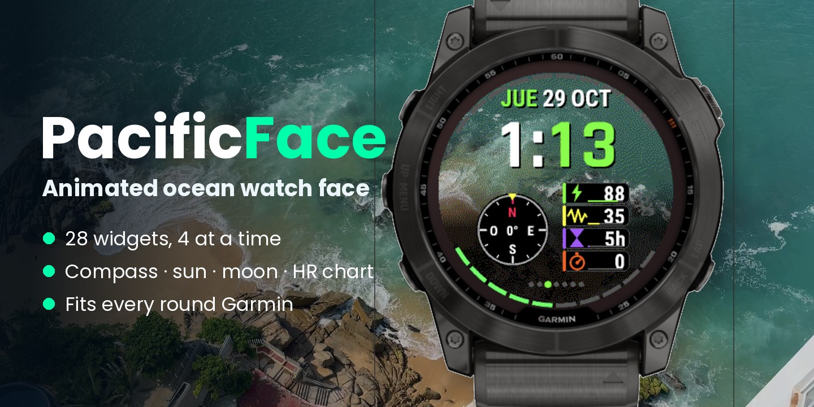
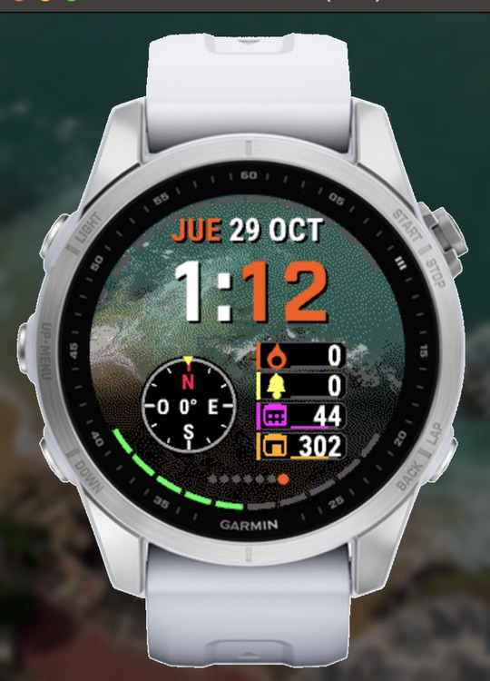
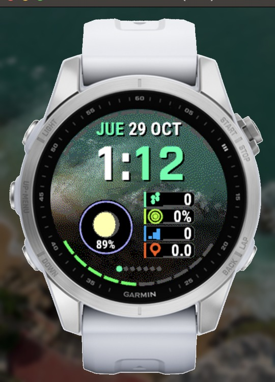
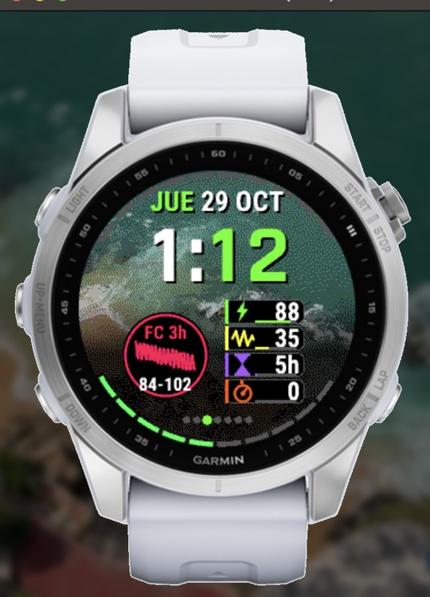
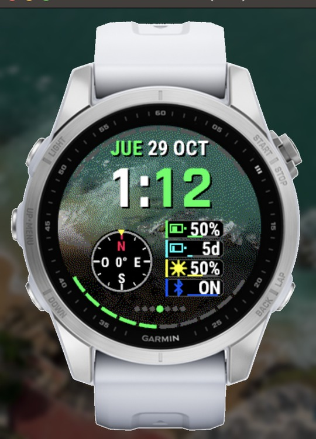

An animated Acapulco beach watch face for Garmin, with 28 widgets that rotate on your wrist.





Install PacificFace from the Garmin Connect IQ Store for free. It starts in trial mode with one widget page and the compass dial. Buy a one-time license key to unlock all 28 widgets and every dial. Enter the key in the watch face settings in the Garmin Connect app. A license works on up to 3 devices.
Questions or license problems: fendivrt@gmail.com